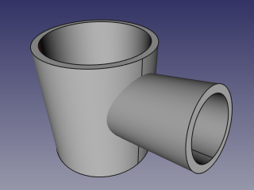

|
| Emplacement du menu |
|---|
| Part → Join → Cutout for Object |
| Ateliers |
| Part |
| Raccourci par défaut |
| Aucun |
| Voir aussi |
| Connect, Embed, Cutout, Part Booleans, Part Thickness |
Description
l'outil Découpe créé une ouverture dans la paroi d'un objet par un autre objet (par exemple un tuyau) .
Comment l'utiliser
Sélection l'objet de base en premier, puis celui qui est "implanté", l'ordre de sélection est important Choisir la commande Découpe
Un objet est créé, visible en vue 3D, les objet d'origine sont cachés
Propriétés
Base
- DONNÉESBase: Référence à l' objet de base . Cet objet doit être unique
- DONNÉESImplantable: Référence à l'objet a "Découpant". Cet objet peu être un objet simple ou un ensemble.
- DONNÉESMode: Le mode opératoire, égal 'joindre' (le changement doit être effectué dans Part_JoinXXX). La valeur du 'bypass' peu être temporairement dissous (un composé de Base et outil peu être créé, ça peu être une opération plus rapide ).
Exemple
- Créer un tuayauthickness cylinder:

- Créer un second plus petit, placement qui perce le plus gros:
 - Sélection du premier, puis le second (ordre de sélection est important), et clic l'outil de découpe, dans le menu déroulant .

{kind=link}
{kind=link}
{kind=link}
Algorithme
L'algorithme de cet outil est relativement simple
1. L'objet de base est boolean-cut avec l’objet.
Le composé résultant le plus large est conservé
Si l'affinage de propriété est vraie, le résultat l'est refine.

Notes
- Si après l'étape 1, l' objet résulte en une pièce, la découpe l'est
union La pièce la plus large est déterminante pour déterminer le volume final
Seul des solides sont concernés
Programmation
L'outil point, peut être utilisé dans des macros, et, dans la console Python, en utilisant le code suivant :
JoinFeatures.makePartJoinFeature(name = 'Cutout', mode = 'Cutout')
Créer un objet plein (solide) les propriétés de base sont maintenant
Exemple:
import JoinFeatures j = JoinFeatures.makePartJoinFeature(name = 'Cutout', mode = 'Cutout' ) j.Base = FreeCADGui.Selection.getSelection()[0] j.Tool = FreeCADGui.Selection.getSelection()[1]
L'outil lui-même est implémenté en Python, voir /Mod/Part/BOPTools/SplitFeatures.py la où FreeCAD est installé.
Version
Cet outil est inclus à FreeCAD depuis V0.16.5069